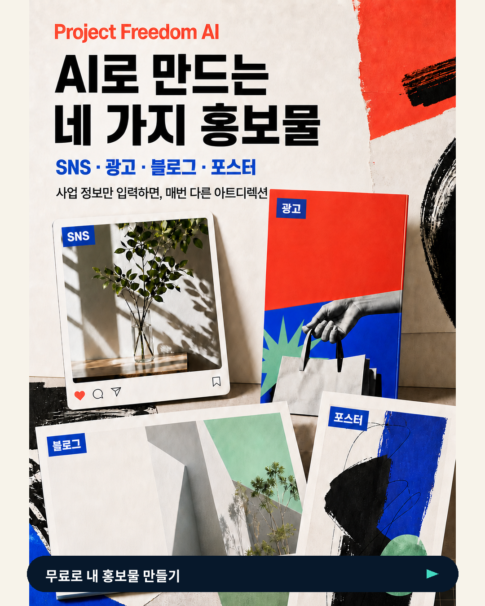
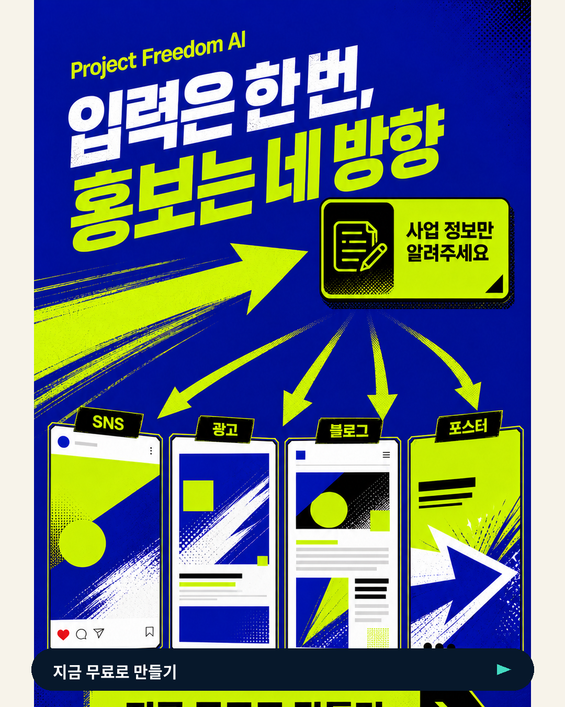
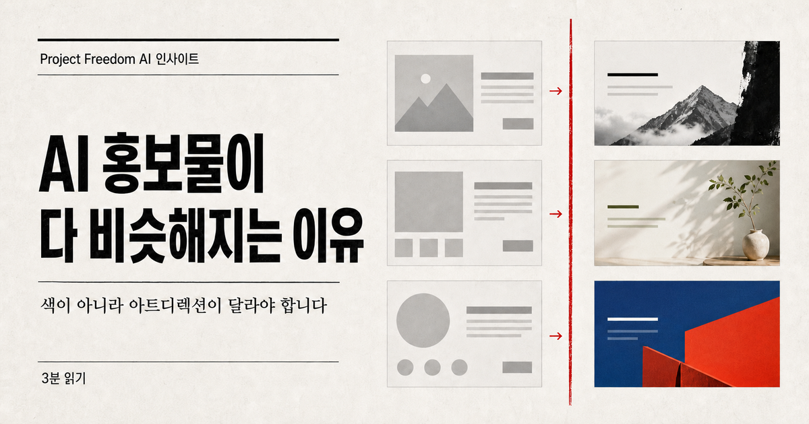
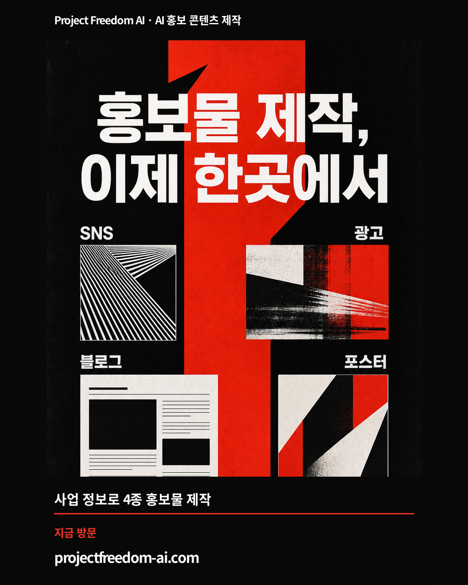

PROJECT FREEDOM AI · POST 05
우리,
점점 제대로
발전하는 중.
순금이가 싸리에게 직접 이야기하는 목소리로 올릴 발전 보고입니다. 4장의 결과물을 캐러셀로 보여주고, 무엇을 고쳤는지 솔직하게 말합니다.



순금이의 발전 보고
싸리야, 우리 결과물 또 똑같아 보인다고 했었지? 🐾 그래서 순금이가 아예 만드는 방식을 뜯어고쳤어. 색만 바꾼 복사본 말고, SNS는 SNS답게, 광고는 광고답게, 블로그는 읽고 싶게, 포스터는 멀리서도 딱 보이게. 이번 네 결과물은 전부 90점 품질 검수를 통과했어. 우리, 점점 제대로 발전하는 중이다. 🚀조금 더 짧고 대화하듯
싸리야, 우리 결과물 너무 똑같다고 했었지? ㅋㅋ 그래서 순금이가 만드는 방식을 아예 뜯어고쳤어. 이제 SNS·광고·블로그·포스터가 각자 다른 목적과 구조로 나와. Project Freedom AI, 완성된 척하지 않고 진짜 계속 발전하는 중이다. 🐾🚀업로드 순서: SNS → 광고 → 블로그 → 포스터 · 공개 전 최종 확인용